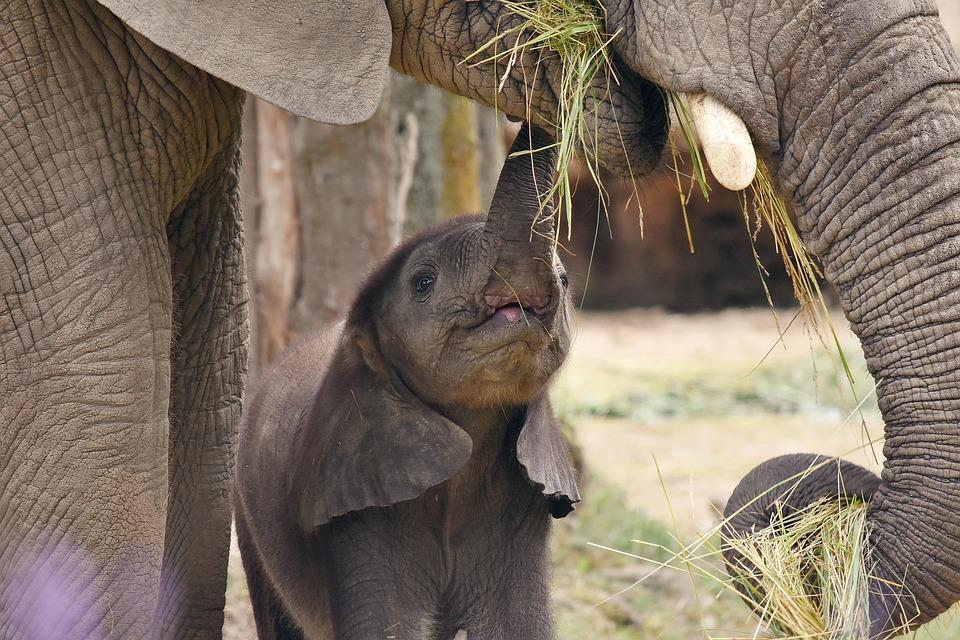

(Loxodonta africana)
El elefante es un mamífero terrestre de gran tamaño, conocido por su inteligencia, memoria y fuerte vínculo social. Históricamente ha convivido cerca de los humanos en algunas culturas y es fundamental en los ecosistemas, ya que ayuda a mantener el equilibrio ambiental al dispersar semillas y modificar el paisaje. Gracias a su inteligencia y sensibilidad, los elefantes pueden reconocer individuos, usar herramientas simples y mostrar emociones complejas. Dependiendo de la especie y cuidados en cautiverio, su esperanza de vida oscila entre 60 y 70 años, necesitando una alimentación abundante, agua suficiente y un ambiente amplio para moverse. Los elefantes presentan características físicas únicas, como su trompa, colmillos y orejas grandes, y viven en manadas estructuradas, lo que les permite protegerse y socializar eficazmente.
Características